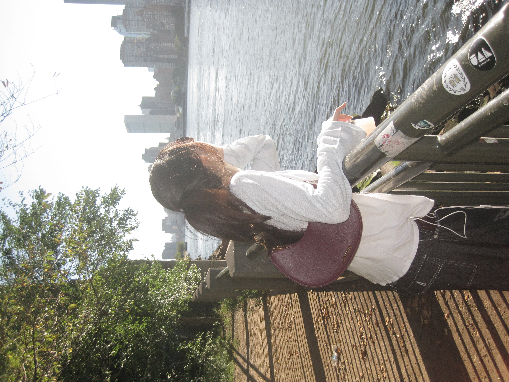
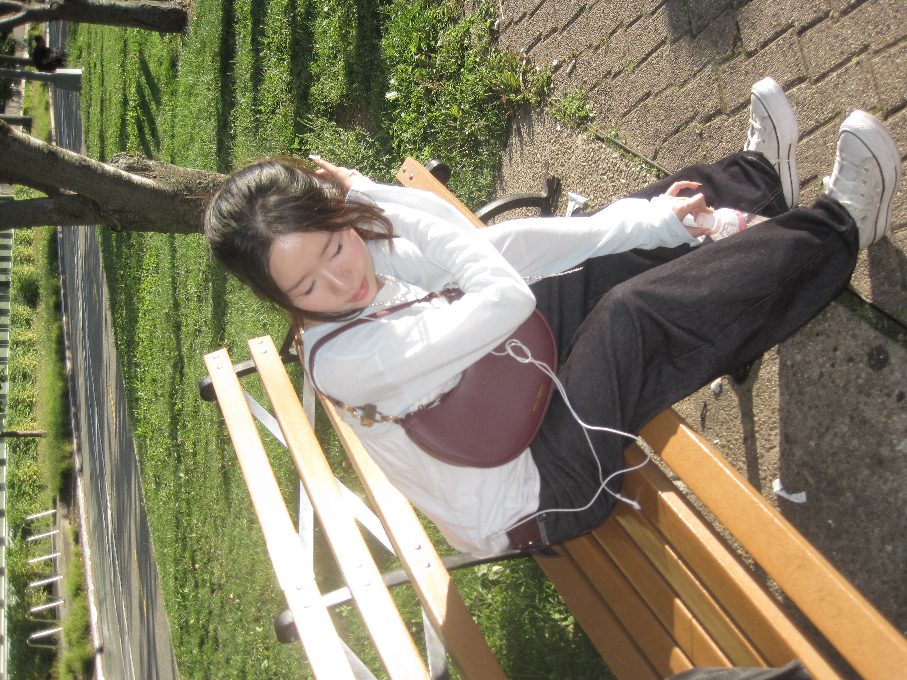
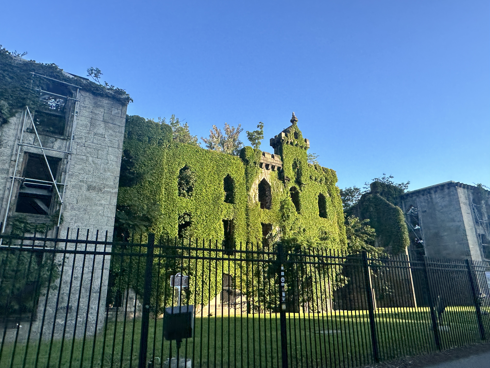
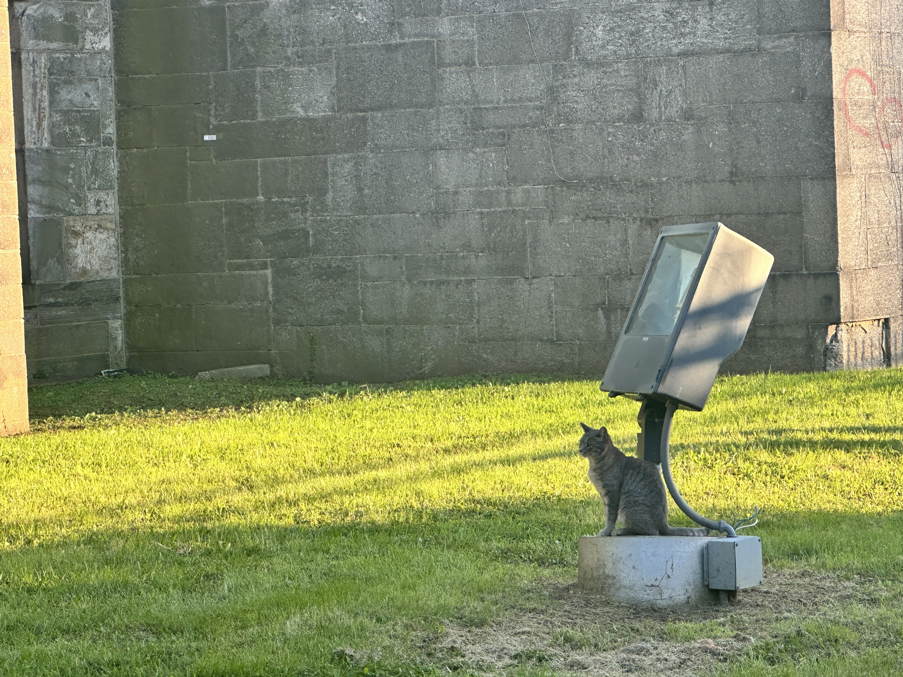
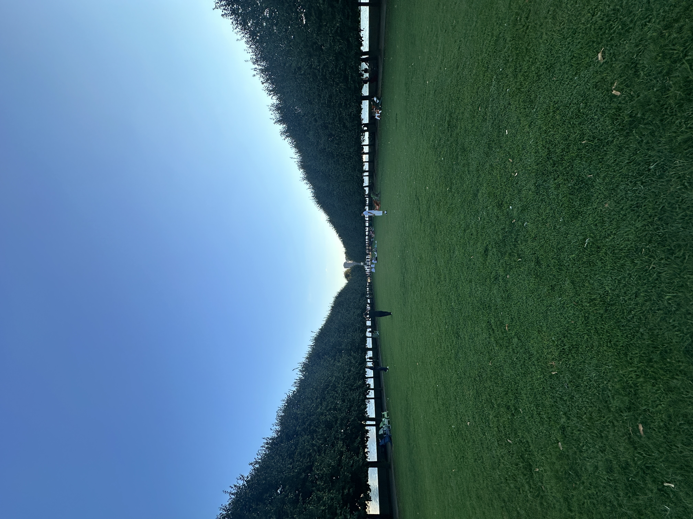
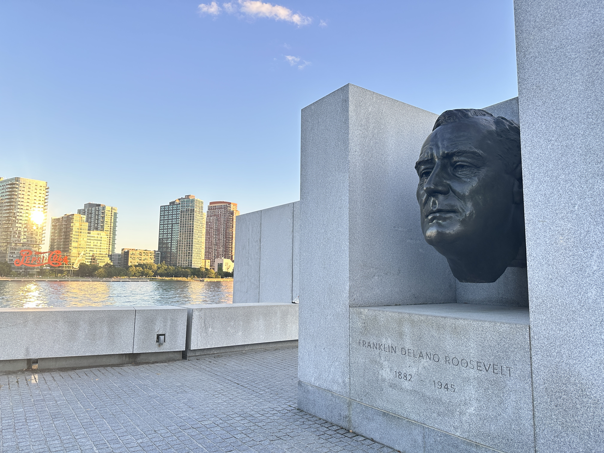
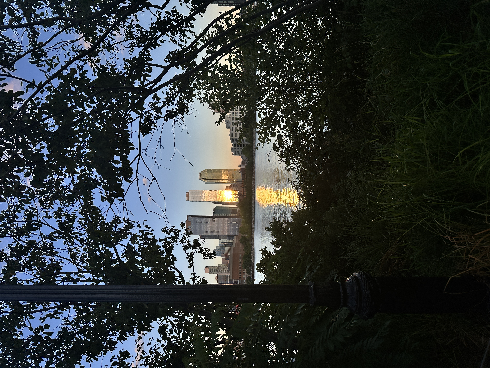
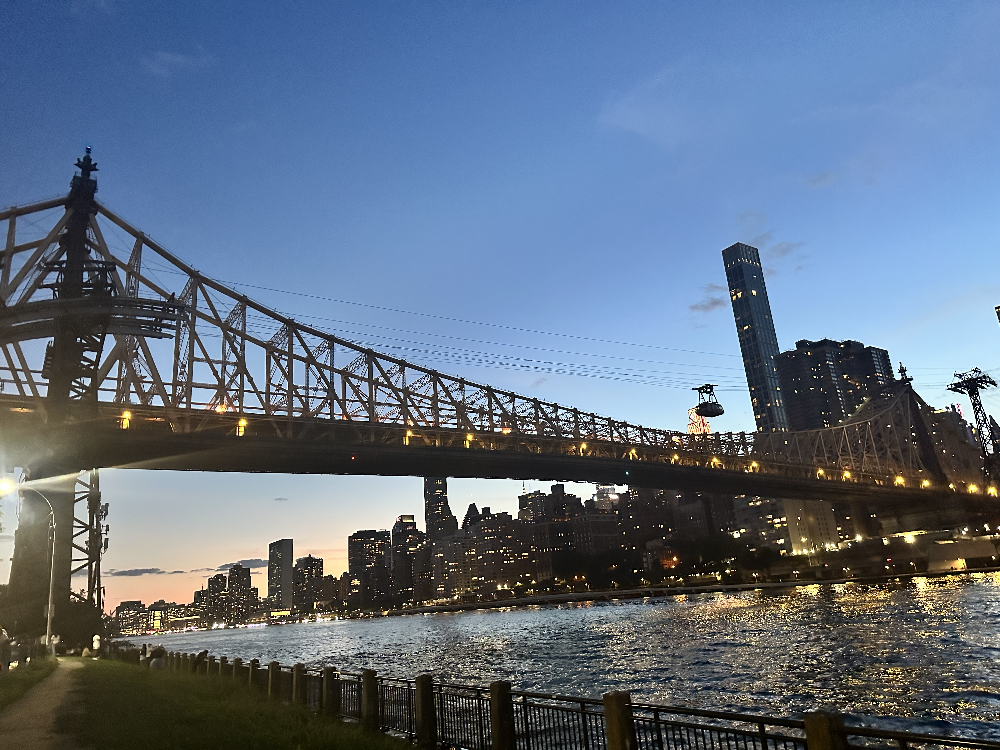
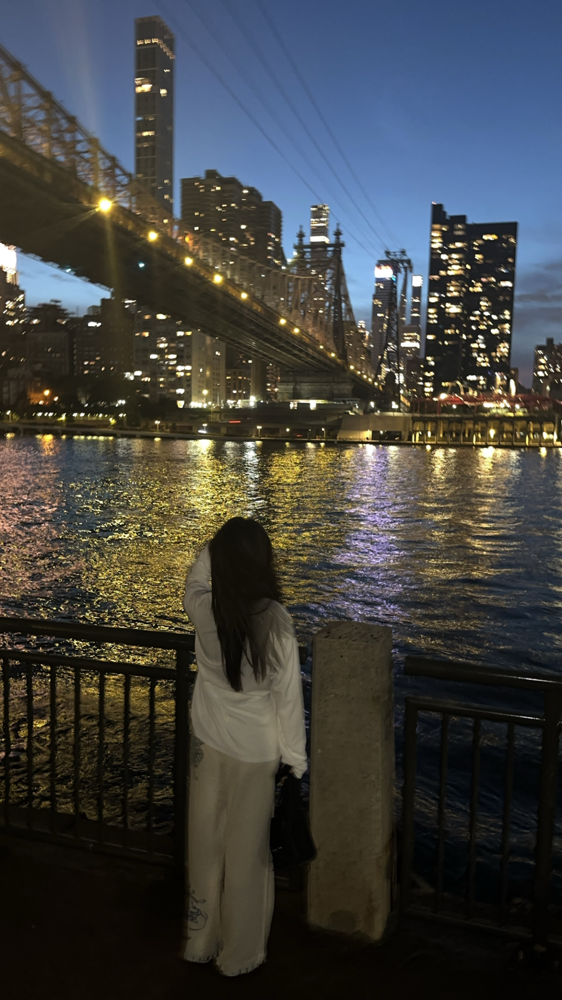

Oh wow! the senery is so beautiful! There's benches, greenery, sunlight...and the air is clear and fresh.



Spooky!! I wonder if there's ghosts or spirit that resides in there...no wonder you can't even enter
wait...what is that?

AWW😽🥺🥺
This kind of reminds me of Central Park. I love how the trees are symmetrically structured to create this beautiful illusion

Oh! this must be Roosevelt himself

7:00pm

7:30pm

8:00pm

look at the time! It's already 8:20pm
Go back on the Tram